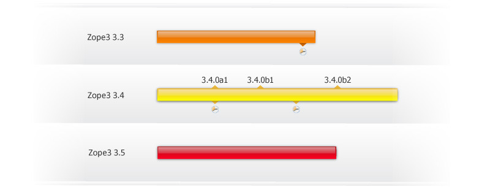

10 of 11
Project and release management

Launchpad is a supermarket of free software projects. As a project owner, you can tell the world everything they need to know about your work: where you track bugs, where you host your code, who’s involved, the details of your release plans and more. Free software community members and other projects can use Launchpad to either directly learn information about your project or use Launchpad's extensive search to discover your work.
Lines of development
Most free software projects have concurrent lines of development, such as the current stable release, an older but still supported release and a trunk into which new work is committed.

Launchpad calls these series and helps you to organise your work – code, translations, bug reports, and so on – around them. Through series, your community can work in parallel on different major releases of your software.
By targeting bug reports and chunks of work to future releases, trusted members of your community can help create a light-weight roadmap.
Publishing your software
Once you’re ready to publish, you can both publicise and distribute your releases using Launchpad.

Launchpad helps you to get your software to the users of Linux-based operating systems, such as Ubuntu, using Debian-style packages and as direct binary downloads from your project’s Launchpad home page.